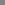

Carpalx optimizes keyboard layouts to create ones that require less effort and significantly reduced carpal strain!

 Download keyboard layouts, or run the code yourself to explore new layouts.
Download keyboard layouts, or run the code yourself to explore new layouts.
 X11 layouts are available! Patches to include Carpalx layouts in xkeyboard-config and kbd have been submitted by Perry Thompson. Meanwhile, many thanks to Sven Hallberg for providing X11 configuration for Carpalx layouts. Richard Gomes contributed an archive of these files for KDE/Gnome users.
X11 layouts are available! Patches to include Carpalx layouts in xkeyboard-config and kbd have been submitted by Perry Thompson. Meanwhile, many thanks to Sven Hallberg for providing X11 configuration for Carpalx layouts. Richard Gomes contributed an archive of these files for KDE/Gnome users.
 Love your coworkers? Switch them to QWKRFY layout or a fully optimized QGMLWY layout.
Love your coworkers? Switch them to QWKRFY layout or a fully optimized QGMLWY layout.
 Hate your coworkers? Switch them to TNWMLC layout. It's the only keyboard layout that has its own fashion line.
Hate your coworkers? Switch them to TNWMLC layout. It's the only keyboard layout that has its own fashion line.
Have ideas? Tell me.
16/aug/16 — Ergonomic Keyboard Layout Designed for the Filipino Language at AHFE2016 derives layout for Filipino language using Carpalx
18/apr/16 — Carpalx layouts soon to appear in freedesktop (package xkeyboard-config) and kbd. Thanks to Perry Thompson.
9/sep/14 — A new layout—De Correspondent—for the Dutch language in collaboration with De Correspondent.
16/may/14 — Added evaluation of the Norman layout. This layout modifies 14/26 keys and has statistics similar to Colemak. Detailed statistics are available.
12/feb/14 — Added evaluation of the abKey layout. Its alphabetic layout makes no attempt at ergonomics. Detailed statistics are available.
Colemak - Popular Alternative
ON THIS PAGE
Colemak - The Popular Alternative
The Colemak layout is one of the more popular alternatives to QWERTY and Dvorak. It has its ZXCV keys in the classical QWERTY position and the only punctuation key that it relocates is the ; which is moved to make the right pinky service a letter key.

Colemak - typing effort
Below are the typing effors of Colemak, Dvorak and QWERTY. QWERTY comes out as the big loser here, with a huge increase over Colemak in the base effort (+193%), a large stroke path increase (+36%) and a significant penalty increase (+16%). Dvorak is already an improvement over QWERTY, so the difference between it and Colemak is smaller.
| model | keyboard | total effortrel% | effort contributionsrel% | ||
|---|---|---|---|---|---|
| base | penalties | path | |||
| mod_01 | colemak |
1.842
 |
0.34418.7
|
0.76341.4
R0.158 F0.487 |
0.73539.9
|
| dvorak |
2.098
(+13.9)
|
0.39718.9
(+15.4)
|
0.93744.7
(+22.8)
R0.171 (+8.2) F0.638 (+31.0) |
0.76536.5
(+4.1)
|
|
| qwerty |
3.000
(+62.9)
|
1.00033.3
(+190.7)
|
1.00033.3
(+31.1)
R0.408 (+158.2) F0.408 (-16.2) |
1.00033.3
(+36.1)
|
|
Colemak - detailed statistics
Colemak makes even greater use of home row (74%) than Dvorak (71%). This leaves QWERTY's 34% far behind. Bottom row use is low at 9%, like Dvorak.
Colemak is more balanced in hand use, with a 6% preference for the right hand (Dvorak has 14% for the right and QWERTY 15% for the left).
Cumulative run statistics for Colemak are worth looking at. The rhl(0) and rhr(0) are nearly both 50% (0.55 and 0.49, respectively). This means that half of the time successive keystrokes use the same hand and that this characteristic is symmetric with respect to the left and right hands. In other words, Colemak is very good at maintaining hand alternation for both hands. Consecutive uses of the home row is also favourable in Colemak, with 85% of runs having a length of <=5 strokes (compare this with 4 strokes for Dvorak and somewhere between 1-2 strokes for QWERTY).
Both Colemak and Dvorak make greater use of the pinky. Colemak uses the pinky 16% of the time (18% for Dvorak and 10% for QWERTY). Colemak does a good job at loading the stronger fingers (index and middle) and uses them 67% of the time. This is better than Dvorak which uses these fingers 60% of the time, but not as good as QWERTY which uses them 69% of the time.
| carpalx effort optimization | keyboard name | statistics | effort | ||||||||||||||||||||||||||||||||||||||||||||||||||||||||||||||||||||||||||||||||||||||||||||||||||||||||
|---|---|---|---|---|---|---|---|---|---|---|---|---|---|---|---|---|---|---|---|---|---|---|---|---|---|---|---|---|---|---|---|---|---|---|---|---|---|---|---|---|---|---|---|---|---|---|---|---|---|---|---|---|---|---|---|---|---|---|---|---|---|---|---|---|---|---|---|---|---|---|---|---|---|---|---|---|---|---|---|---|---|---|---|---|---|---|---|---|---|---|---|---|---|---|---|---|---|---|---|---|---|---|---|---|---|---|---|
| rowh | rowb | hand asym | finger freq | cumulative run distribution | mod_01 | ||||||||||||||||||||||||||||||||||||||||||||||||||||||||||||||||||||||||||||||||||||||||||||||||||||||
| none |
Colemak
 
QWFPGJLUY;[]\
ARSTDHNEIO'
ZXCVBKM,./
|
0.74 | 0.09 | -0.06 | 0.16 0.17 0.26 0.41 |
|
1.842 | ||||||||||||||||||||||||||||||||||||||||||||||||||||||||||||||||||||||||||||||||||||||||||||||||||||
| none |
Dvorak standard

',.PYFGCRL/=\
AOEUIDHTNS-
;QJKXBMWVZ
|
0.71 | 0.09 | -0.14 | 0.18 0.21 0.26 0.34 |
|
2.098 | ||||||||||||||||||||||||||||||||||||||||||||||||||||||||||||||||||||||||||||||||||||||||||||||||||||
| none |
QWERTY standard
QWERTYUIOP[]\
ASDFGHJKL;'
ZXCVBNM,./
|
0.34 | 0.15 | 0.15 | 0.10 0.21 0.27 0.42 |
|
3 | ||||||||||||||||||||||||||||||||||||||||||||||||||||||||||||||||||||||||||||||||||||||||||||||||||||
Colemak - word difficulty
Using the typing effort model described in Carpalx - Typing Effort, I ranked 6-12 character words by their corresponding effort (effort is normalized to word length) using a dictionary of 480,000 words (/usr/share/dict/words, Red Hat 4 Enterprise). Below is a table that shows sets of words representing effort percentiles.
| COLEMAK ENGLISH Word Efforts | ||
|---|---|---|
| average effort | percentile | wordeffort |
| 6.8 | hardest | zaqaziq7.7 zyzzyva7.5 pazazz7.2 tazzas7.1 zaqqum7.0 pizzazz7.0 mazzard7.0 gozzan7.0 zyzzyvas6.9 hazzan6.8 pazazzes6.8 razzia6.8 pizazzy6.8 pizzazzes6.7 lazzaro6.7 cazzie6.7 zoozoo6.7 bazaar6.6 azazel6.6 izzard6.5 gozzard6.5 jazzbow6.5 piazzas6.5 razzly6.4 razzle6.4 |
| 2.9 | 90% | caricography2.9 clavariaceae2.9 computably2.9 gastromyces2.9 gasworks2.9 knobbling2.9 marmalade2.9 nabobism2.9 obliger2.9 obliges2.9 skoals2.9 |
| 2.6 | 80% | asyllabic2.6 beaverboard2.6 bouquetin2.6 cryptical2.6 homicidious2.6 michiko2.6 nonmajor2.6 sarcophagic2.6 sholoms2.6 tamper2.6 vampireproof2.6 |
| 2.3 | 70% | asarone2.3 bathyscaphes2.3 fluoridize2.3 gametophobia2.3 megaloscope2.3 mercurially2.3 neoacademic2.3 polygoneutic2.3 premorally2.3 seraphlike2.3 subantiquity2.3 |
| 2.2 | 60% | crossfoot2.2 giggled2.2 giggler2.2 giggles2.2 ligula2.2 mytishchi2.2 phlyctaenae2.2 poppyfishes2.2 regave2.2 stomodeums2.2 unifarious2.2 |
| 2.0 | 50% | brewises2.0 castorin2.0 chapaties2.0 delirious2.0 glandiferous2.0 implete2.0 leafgirl2.0 mythify2.0 odours2.0 phenicopter2.0 praenomens2.0 |
| 1.9 | 40% | antiars1.9 coregency1.9 counselor1.9 isochela1.9 keyser1.9 muttonhood1.9 platyrrhin1.9 shelver1.9 shelves1.9 tokenless1.9 triplexes1.9 |
| 1.7 | 30% | aspidiotus1.7 beethovian1.7 candidiasis1.7 dionaea1.7 ftncmd1.7 grisounite1.7 lengthful1.7 mantlepieces1.7 otherwise1.7 shortfall1.7 sorehawk1.7 |
| 1.6 | 20% | crossbench1.6 directories1.6 infauna1.6 intramundane1.6 muspellsheim1.6 pushing1.6 reheeling1.6 superinfer1.6 trienniums1.6 unparsonic1.6 windstorms1.6 |
| 1.3 | 10% | annadiane1.3 beerothite1.3 coenosteal1.3 contestate1.3 desiring1.3 ettirone1.3 oriently1.3 overseeing1.3 senorita1.3 tiemannite1.3 uniterated1.3 |
| 0.2 | easiest | steeds0.1 steers0.1 stenar0.1 ensteep0.2 teetan0.2 seessel0.2 nessie0.2 steeps0.2 nettie0.2 sensal0.2 sentry0.2 seethe0.2 esseda0.2 teethe0.2 settees0.2 nessim0.3 testees0.3 stenton0.3 essera0.3 settee0.3 stints0.3 steens0.3 nettly0.3 stettin0.3 entrees0.3 teethy0.3 |